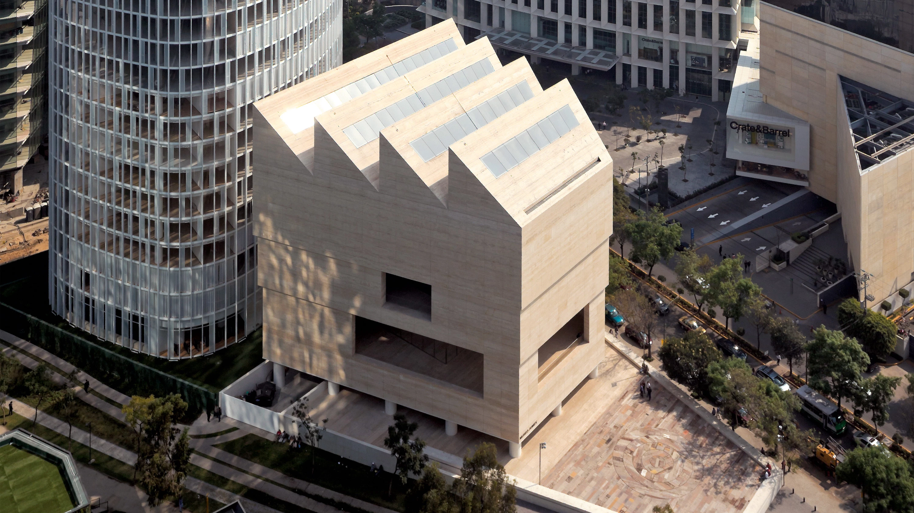

Explora una de las instituciones más relevantes del arte contemporáneo en América Latina.

Museo Jumex · Arte contemporáneo en CDMX
El Museo Jumex, ubicado en la Ciudad de México, es el espacio principal de la Fundación Jumex Arte Contemporáneo y una plataforma dedicada a la producción, exhibición e investigación en torno al arte contemporáneo.
El edificio fue diseñado por el arquitecto británico David Chipperfield y se distribuye en varios niveles que incluyen galerías, espacios públicos, cafetería y librería. Su arquitectura busca ofrecer una experiencia fluida entre exposiciones y espacios de reflexión.
La colección y las exhibiciones del museo abarcan obras de artistas nacionales e internacionales que exploran las prácticas artísticas más contemporáneas, promoviendo la innovación y ampliando las formas de pensar el arte hoy.